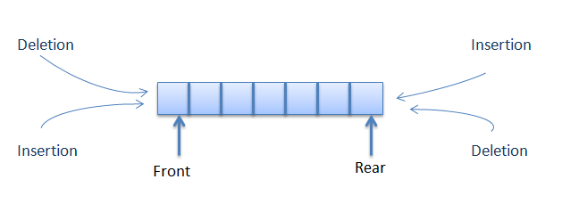
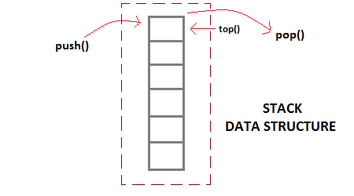
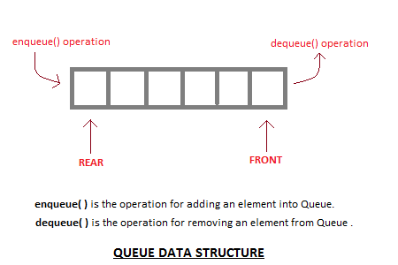

Stacks, queues, deques
Stacks, queues, and deques allow you to insert or remove elements at the end(s).They can be implemented with either an array or a linked list.

Deque. Source: java2novice.com
Deque
In a deque (short for double-ended queue), insertion and deletion can be done at both ends.This means that a deque can be used as either a stack or a queue.
ArrayDeque (JCF) is an array implementation of the Deque interface.
LinkedList (JCF) is a doubly-linked list implementation of the Deque interface.
Stack

Stack. Source: studytonight.com
It is a last-in-first-out (LIFO) data structure.
- Push adds an element to the top.
- Pop removes an element from the top.
Both ArrayDeque and LinkedList can be used as a stack because they implement Deque.
The API does not recommend using the Stack (JCF) class.
Queue

Queue. Source: studytonight.com
It is a first-in-first-out (FIFO) data structure.
- Enqueue adds an element to the end.
- Dequeue removes an element from the front.
Example uses
- Stacks may be used to check if braces are properly matched, or to evaluate postfix expressions.
- Queues may be used to implement job scheduling, or to implement breadth-first search.
ArrayDeque implementation
Sample codeClass: ArrayQueue
Interface: Queue
This is a simplified implementation of ArrayDeque from the JCF (only the Queue operations are implemented).
ArrayDeque (JCF) is implemented with a circular array. It keeps track of the indices of the front and back of the deque.
If front or back goes past either end, it wraps around to the other end.
When it runs out of space, it copies the elements into a new larger array.
- When removing an element, we set the reference to null so the garbage collector can delete the object (Goodrich p. 232).